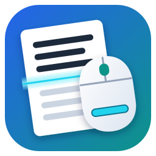
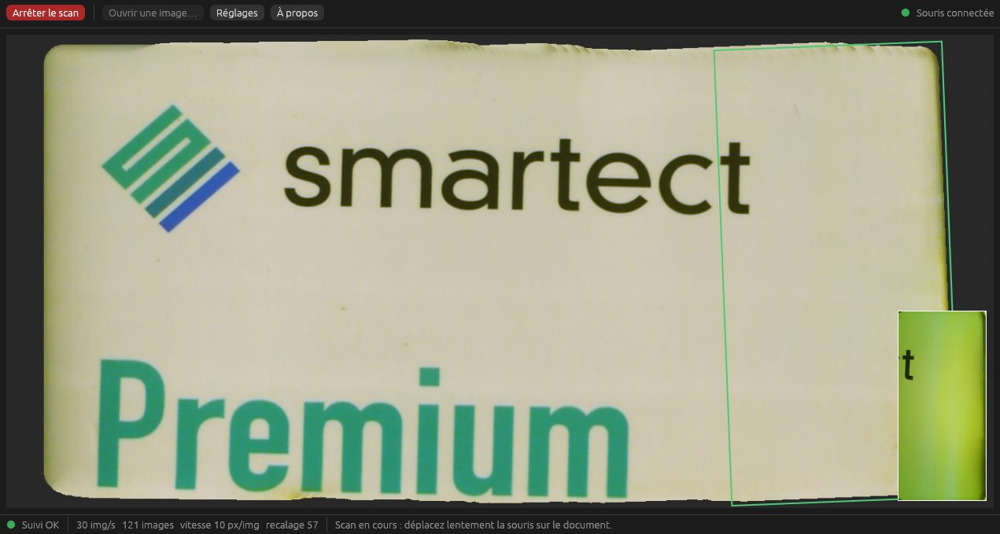
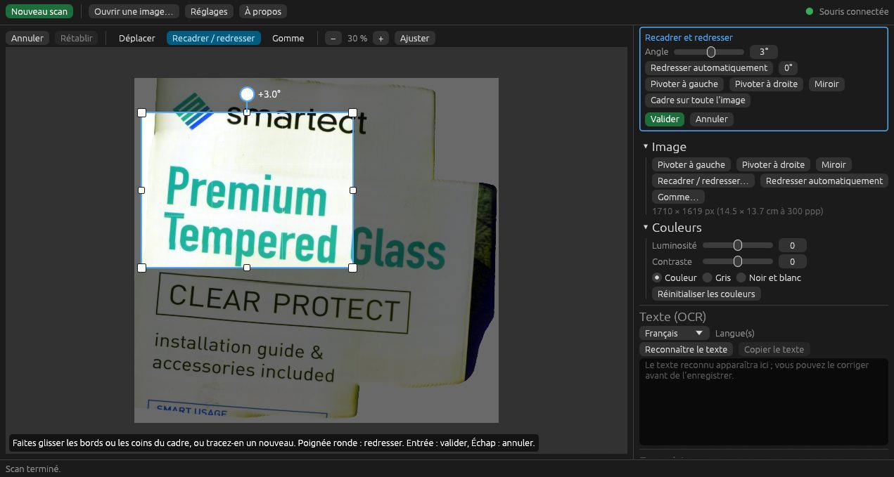

Mulot-scan
Logiciel libre pour la souris scanner IRIScan Mouse / Dacuda Scanner Mouse, sous Windows et Linux.

Fonctions
- Scan en direct, démarré depuis l'interface ou par le bouton Scan de la souris.
- Suivi par l'image et par les deux capteurs laser de la souris ; position retrouvée après un soulèvement.
- Recadrage, redressement automatique ou manuel, gomme blanche ou adaptative, annulation.
- Reconnaissance de texte avec Tesseract.
- Export PNG, JPEG, TIFF, BMP, PDF, PDF avec texte, TXT et Word.
- Sous Windows : icône dans la zone de notification et lancement à l'ouverture de session.
Installation
Windows 10 et 11 — lancez mulot-scan-…-setup.exe.
Si Windows affiche « Windows a protégé votre ordinateur », cliquez sur
Informations complémentaires puis Exécuter quand même : les versions ne sont pas encore signées.
Aucun pilote n'est nécessaire.
Linux — décompressez mulot-scan-…-linux-x86_64.tar.gz et lancez mulot-scan
(glibc 2.35 ou plus récente).
Pour l'OCR, installez aussi Tesseract avec la langue voulue (sous Windows, l'installeur UB Mannheim).
Utilisation
- Branchez la souris : l'indicateur en haut à droite passe au vert.
- Posez-la sur le document, cliquez sur Scanner ou appuyez sur son bouton Scan.
- Déplacez-la lentement, en passes qui se chevauchent. Si l'indicateur passe à l'orange, revenez sur une zone déjà scannée.
- Arrêtez le scan, retouchez, lancez l'OCR et enregistrez.
Pour des fonds bien blancs, faites une fois Réglages → Calibrer, la souris immobile sur une feuille blanche vierge.

Raccourcis de l'éditeur
Ctrl+Z/Ctrl+Y: annuler / rétablirCrecadrer,Egomme,Hdéplacer,Entréevalider,Échapannuler- Molette : zoom ; clic droit ou molette enfoncée : déplacer ;
Maj+ molette : taille de la gomme
En cas de problème
- « Caméra déjà utilisée » : fermez les autres fenêtres de Mulot-scan ou le logiciel d'origine.
- Pointeur figé après un plantage : relancez Mulot-scan, ou exécutez
mulot-scan reset. - Texte à l'envers : décochez la correction du miroir dans les réglages.
Autre souci : ouvrez un ticket.